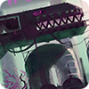

Areas / Regions
There are 12, (with the Downpour DLC, 22) different regions in Rain World, each with their own music, atmosphere and mix of creatures. Each region is connected to its neighbors by Karma Gates, which can each only be passed once per cycle.
|  | Industrial Complex |
Drainage System |
Chimney Canopy |
Garbage Wastes |
Shaded Citadel |
Shoreline |
Sky Islands |
Farm Arrays |
The Exterior |
Five Pebbles |
Subterranean |
Pipeyard |
 Outer Expanse |
 Submerged Structure |
Waterfront Facility |
Metropolis |
The Rot |
Looks to the Moon |
Undergrowth |
Silent Construct |
Rubicon |
.